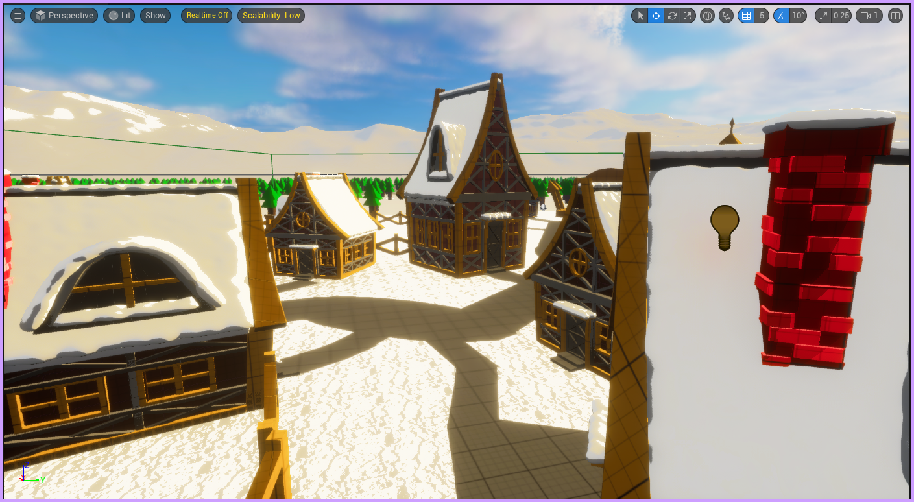
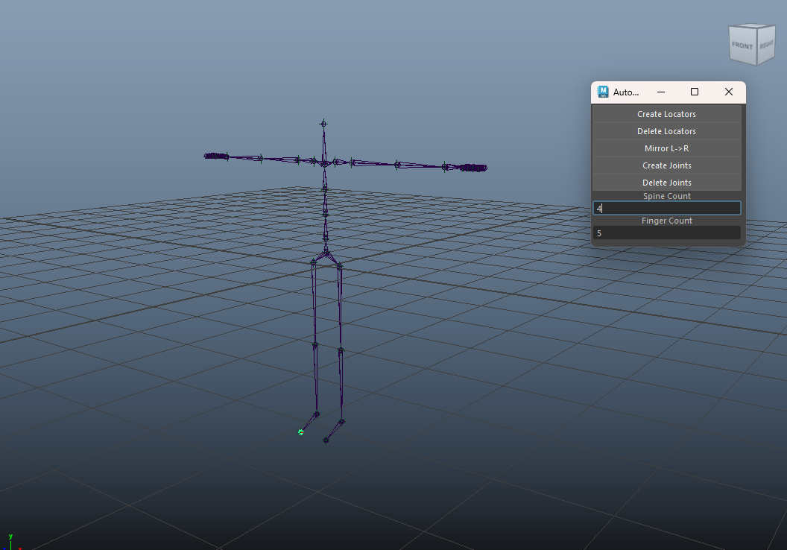

VHS Post Process Effect
Multiplayer-optimized VHS distortion shader with a reusable scrambler function — built for Parallax Protocol under networked performance constraints.
Spooky Smoke Post Process
Geometry-noise shader simulating psychic sight — iterated across multiple designer passes to balance atmosphere and legibility without any scene assets.
Occlusion Mask Camera System
Dot product–based angle calculation ensuring character visibility in a fixed isometric environment. Solves the classic wall-occlusion problem without extra geometry.

Cel → PBR Shader Evolution
Designed as a cel shader, later iterated into a physically-based approach. Documents the design decisions and trade-offs behind the aesthetic shift.

Deer AI Behaviour System
Prototyped, then scrapped due to debug complexity. Documents design intent, failure mode, and the fix I later identified — a case study in how AI problems compound.

Auto Rigger Tool
One-click rigging pipeline tool in Python for Autodesk Maya — custom UI with node-based architecture enabling fast rig generation with minimal manual steps.

Agronova — SimGen Studio
Educational simulation game teaching drone operation and agriculture. Led production, technical art, rigging pipeline, and character tooling across a full academic year.

Rigging & Retargeting Pipeline
Multi-rig targeting system for Agronova — reduced animation iteration time significantly for educational game assets.